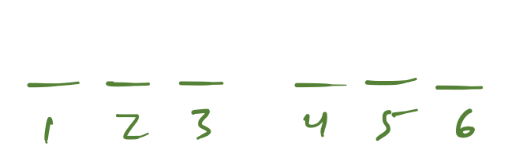
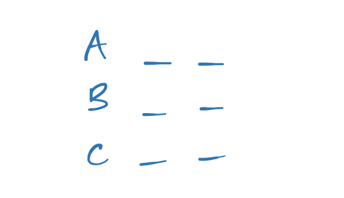

Scan, Draw, Check
Drawing games is a three-step process:
| Step | Goal | Recommended Time |
|---|---|---|
| 1. Scan | Determine the game type | 0:15-0:30 |
| 2. Draw | Put everything you know on paper | 0:45 to 1:30 |
| 3. Check | Prevent errors | 0:15-0:30 |
Step 1: Scan
Before you start drawing, quickly scan the game to get a sense of the overall shape of the game.
Glance at everything given on the first page of the game, including the first question.
Ask: "Is this more ordered or more grouped?"
| Game Family | How to Recognize | Name of Board | Example drawing |
|---|---|---|---|
| Order | one element at a time - more 2D - elements are ranked or ordered - first question says "acceptable order" | number line |  |
| Group | multiple elements go with or in each group - more 3D - rules put elements together or keep them apart - it's not ordered | buckets |  |
Note
Your scan will become more productive when you memorize the 8 common types.
Practice suggestion: Rapid Recognition
Try to recognize the type of every game in a prep test section as fast as possible (like 5 seconds each).
To assess yourself, play the games out and see if your guesses were useful.
Ready to add more complexity to your scan?
| clue | what to look for | what it means |
|---|---|---|
| variables | elements, groups, characteristics, categories, any other moving parts | you need some visual way of tracking each variable |
| numbers | minimums, maximums, digits | consider how many times the elements can/must repeat |
| splits | restrictions that limit the game to only 2 or 3 possibilities | consider starting a board for each possibility (and not a blank board, and maybe not needing to include a rule) |
| connections | the same element shows up in 2 or more rules | consider combining those rules |
| weirdos | something you haven't seen before | either make it the starting point for your drawing, or leave it out and just write it on the side |
Step 2: Draw
Once you know the general shape of the game, it's time to put pencil to paper.
You draw in order to visually represent all of the information the LSAT gave you, neatly and accurately.
- All: it includes a symbolic representation of all of the information they give you.
- Neat: you can easily read it.
- Accurate: it includes exactly what you know and nothing more.
Your drawing does not need to be perfectly beautiful or completely solve the game.
Warning
Students are often tempted to add guesses about what might happen to their main board. Resist this temptation. Have one clean board that includes only what you know must happen. If you want to explore one possibility, draw a new board (aka make a hypo).
Tip
You can tell your drawing was either incomplete, messy, or inaccurate if you have to re-read the scenario after you start playing the game.
Generally, your drawing will include three parts:
| Name | What it looks like |
|---|---|
| 1. Board | the number line or buckets |
| 2. Index | list of all of the elements |
| 3. Rules | the restrictions on the elements, using simplified symbols |
Learn more: how to draw common rules
Step 3: Check
At minimum, the check is a chance to take a breath and collect yourself.
| Variation | Intention |
|---|---|
| 1. Double-check | make sure you didn't write something backwards or mix up elements. |
| 2. Check-for | now that you've written it down, give yourself another chance to see how it all fits together. |
Experiment with your check
Try doing more or less checking to figure out what works for you. Maybe, unlike me, you don't need a check at all.
Maybe the check-for is unproductive stare time. Or maybe it helps you see splits and connections more easily.
Be honest about how your brain works in order develop a customized list of things to watch out for
I often write order rules backwards. So I triple-check order rules.
Draw Faster
Take exactly as much time as you need to clearly and correctly draw everything.
That said, if you draw faster, you can start getting points faster.
Suggestions for drawing faster
- Memorize the common types + rules.
- Do less, like a shorter scan or a more minimalist drawing.
- Don't worry about splits or connections.
- Make checklists to prevent rushing and staring.
Sample Checklists
Short Scan checklist
- Orders or groups?
Long Scan checklist
- Ordered or grouped?
- Common type?
- Variables?
- Numbers?
- Splits?
- Connections?
Drawing checklist
- Board
- Rules
- Index
Double-check checklist
- Draw the leftovers, aka elements without rules.
- Read each rule one-by-one to make sure your drawing is correct.
- Glance at the set-up to make sure you've captured all the variables and numbers.
- Breathe.
Check-for checklist
- Breathe.
- Any leftovers?
- Any connections?
- Any numeric deductions?
- Any splits?